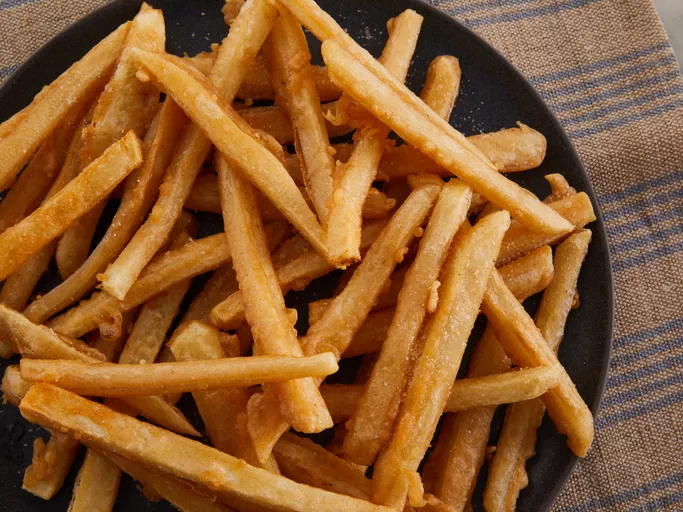

Fries

Description
The greasy potato sticks that a lot of people crave for.
Ingredients
- 3 pounds of sliced russet potatoes (alternatively, use frozen fries)
- 1 cup vegetable oil
- 1 cup all-purpose flour
- 1 teaspoon salt
- 1 teaspoon rosemary or paprika
- 1/2 cup water
Steps
- If you're not using frozen fries, slice potatoes into sticks and place into a bowl of cold water.
- Boil oil to around 350° F. If you're not sure and don't have a thermometer, place a fry and see if it immediately boils.
- Stir all other ingredients except the oil and fries into a bowl to make a batter. If it is too thin, add more flour; if too thick, add more water.
- Dip fries into batter and pat-dry with a towel.
- Boil fries into oil for approximately 4 minutes. Take out fries, pat-dry, and fry again for another 4 minutes. Serve and enjoy the crunchiness!
Back to home